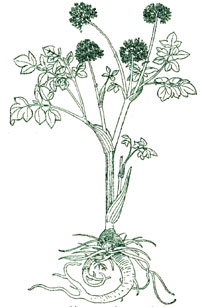
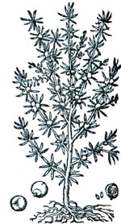

NATURAL REMEDIES
Make your own mouthwash and toothpaste at home for pennies.
My dentist is fond of saying that bad breath is better than no breath at all. He's right, but it's not much better, and the affliction of halitosis (or chronic bad breath) not only plagues millions of people in social situations, it is chiefly responsible for a toothpaste and mouthwash industry that relieves your pockets of more that $1 billion each year. It has become such a major heath "problem" that New York Times health columnist Jane Brody reports she receives more questions about bad breath than about any other topic. If your problem is chronic, mouthwash may even be exacerbat ing the situation. In chronic cases, the aromas are merely a symptom of a greater problem, and washing them away with a few dollars' worth of flavored water only temporarily distracts you from the gum or tooth problems that are causing the dilemma in the first place.
For those of you who face only the occasional problem posed by a bowl of chili and onions, however, do yourself a favor and drive right by the powders and the mad scientist blue-green bottles. Make the remedies at home from materials that are everyone's to share.
Herbal alternatives have a long history. Records from ancient Greece offer various recipes for bad breath, including anise seed, myrrh, and the liberal use of white wine (although anyone who has come within five feet of a bobbing and weaving holiday party-Boer might argue that one). The Romans used herbs and spices like sage, cinnamon, juniper seeds, root of cyprus and rosemary leaves.
Remedying bad breath begins with understanding its cause. In many cases it's due to plaque, that nearly invisible film of bacteria that's constantly forming in our mouths. There may be additional dental culprits as well, including cavi ties, periodontal (gum) disease, or a broken filling that traps food particles.
If you need a quick but temporary mouthwash solution, here are my favorite recipes:
Buy a 3% solution of hydrogen peroxide from your local drug store (for about 50 cents), mix it with an equal part of water and swish it around your mouth for half a minute. Don't swallow. Use this wash three times a week to inhibit bacterial growth in the mouth. Or, grab the baking soda (sodium bicarbonate) from your kitchen, mix just a bit of it with water, and brush at the base of your gums. This not only freshens the mouth, but also neutralizes acidic bacteria, thus having a deodorizing effect.
Angelica is an herb belonging to a group of bitters widely used in European medicine. If you are not in the mood to cultivate it in your garden (it grows well in virtually any climate), the seeds can be obtained from a local health food store. To obtain an effective mouthwash, pour one cup of boiling water over two tablespoons of angelica seeds. Add a dash of peppermint oil, or a little lemon verbena or caraway. Cover the mixture and steep it until it is cool. Strain the pulp out using a cheesecloth and store in a tightly closed container.
If you prefer a slightly spicier exisstence, place three drops of cinnamon oil, two drops of clove oil, two teaspoons of sugar and X teaspoon of boric acid solution in a container with a tight lid, shake well, and watch the fireworks.
You can prepare the last of my favorites by mixing one teaspoon of sugar, two drops of peppermint oil, 1/2 teaspoon of boric acid solution in two cups of water. Some people have difficulty with this one because it is clear, and many assume that their mouthwash must be a vivid color to work well. Trust me, but add a couple of drops of food coloring if you must.
A Toothpaste with Bite Every toothpaste needs five basic ingredients: 1) a cleaning substance; 2) an abrasive; 3) an emulsifier; 4) a sweetening agent; and 5) a flavoring agent, although the last ingredient is optional. The cleaning substance does just that and is usually a soapy material; the abrasive loosens plaque; the emulsifier helps all the ingredients to mix well; the sweetening agent makes it palatable; and the flavoring agent is strictly for promotion. Instead of adding to the pockets of the cotton-candy flavor, multicolor paste manufacturers, make your own. Here's how.
Mix 1/2 teaspoon glycerin, 1/8 teaspoon mild neutral soap powder, a tablespoon of calcium carbonate (often called chalk of Paris White), 1/2 teaspoon gum arabic (available at health food stores) and a couple of drops of peppermint oil. To this mixture add 1/8 cup of water. Heat and stir for five minutes until the mix has achieved a pastelike appearance. By the way, the glycerin is the sweetener; the soap powder the cleanser; calcium carbonate the abrasive; gum arabic the emulsifier, and you might imagine what the peppermint is for. You'll then be able to make a year's supply of paste for about a tenth of what you'd pay for a market brand.
|
 |
 |
|